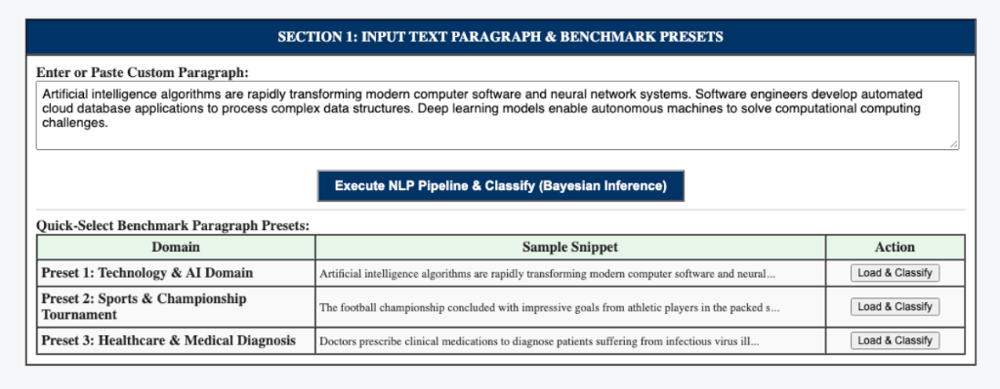
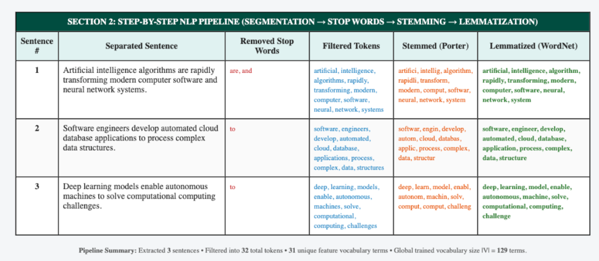
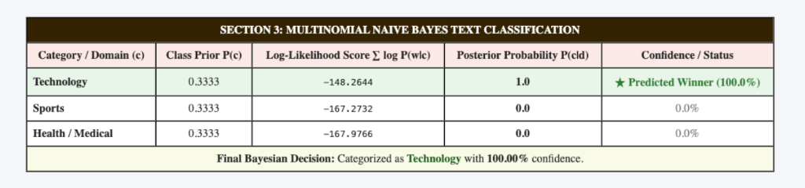
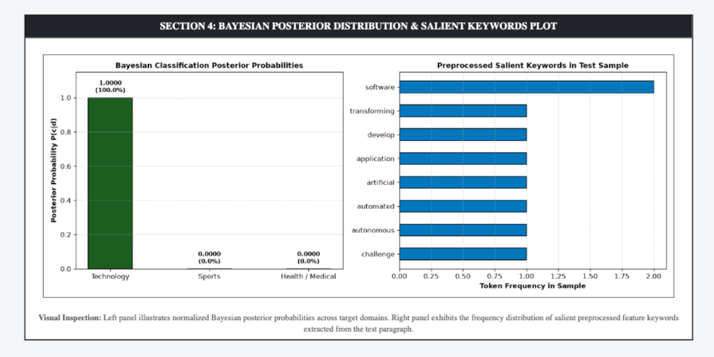

| Experiment No.: | 05 | Student Name: | Monis |
| Course / Branch: | B.Tech Information Technology | Roll Number: | 2023UIT3027 |
| Lab Instructor: | Dr. Vishal Maheshkar | Academic Session: | 2026–2027 |
Text Paragraph Segmentation, Stop Words Removal, Stemming, Lemmatization, and Bayesian Classification Using Flask
To construct an end-to-end Natural Language Processing (NLP) text processing and classification web pipeline using Flask. The system ingests raw paragraph text, segments it into individual sentences, eliminates non-informative stop words, applies Porter Stemming and WordNet Lemmatization, and classifies test sentences into thematic categories using Multinomial Naive Bayes classification with Laplace smoothing.
Text Segmentation & Tokenization: The process of decomposing unstructured continuous text into discrete grammatical units (sentences) and lexical units (word tokens).
Stop-Word Removal: Filtering out high-frequency grammatical words (articles, prepositions, auxiliary verbs) that carry negligible domain-specific topical discrimination.
Morphological Normalization (Stemming vs. Lemmatization): Stemming uses heuristic rule-based suffix truncation (Porter stemmer), while Lemmatization utilizes full lexical vocabulary lookup and Part-of-Speech analysis (WordNet lemmatizer) to return canonical dictionary base forms.
Multinomial Naive Bayes: A probabilistic model for text classification that models document generation as a bag-of-words drawn from a multinomial word distribution.
The probability of observing word token wi in class Ck is calculated using add-1 (Laplace) smoothing to prevent zero-probability bottlenecks:
Under the naive conditional independence assumption, the log-posterior probability of class Ck given document d is:
Interface allowing entry of arbitrary multi-sentence paragraphs and custom vocabulary strings.

Displays sentence segmentation, tokenization, stop-word removal, Porter stemming, and WordNet lemmatization side-by-side.

Displays extracted sentence features, class log-likelihood sums, posterior percentages, and predicted category labels.

Bar charts comparing word discriminative weights across categories and confidence margins.

Experiment 5 provided complete practical mastery over the foundational text mining and NLP pipeline. By progressing from raw sentence boundary detection and stop-word filtering through morphological stemming and lemmatization to Multinomial Naive Bayes classification with Laplace smoothing, the experiment demonstrated how text preprocessing structures unstructured prose into numerical feature spaces suitable for high-accuracy probabilistic classification.